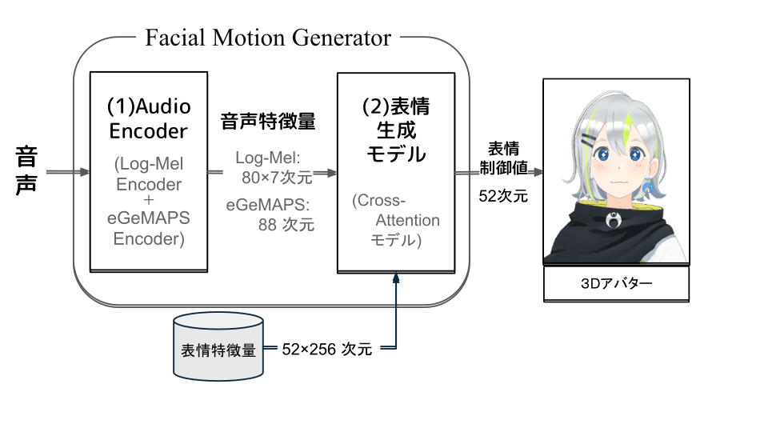

Facial Motion Generator
3Dアバターに適用可能な音声駆動型リアルタイム表情生成システム
概要
近年、3Dアバターを介した対話が普及する一方、音声に同期した表情生成は遅延や実装依存が課題である。 本研究では、音声のみから表情動作の制御値を逐次推定し、ローカルでリアルタイム動作するFacial Motion Generatorを提案する。 異なる音声特徴量と軽量なCross-Attentionモデルを用いた設計により、 Audio2Face-3Dと比較して単一話者データでMAE（平均絶対誤差）を0.147→0.111に低減し、 推論時間を0.62ms/frameへ高速化した。

システム構成
提案手法
本研究では、音声のみを入力として3Dアバターの表情を駆動するための表情動作の制御値（52次元BlendShape係数）をリアルタイムに推定するFacial Motion Generatorを提案します。
Audio Encoder：音声からLog-Mel特徴量（短期的なスペクトル情報）とeGeMAPS特徴量（声の高さや強さなど長期的な韻律情報）を抽出し、 発音に由来する口の形と抑揚に由来する表情変化の両方を表現します。
表情生成モデル：52個のBlendShape要素それぞれに対応した表情特徴量（学習可能なパラメータ）をQueryとし、 Cross-Attentionにより音声特徴量のどの部分に注目すべきかを計算します。 これにより、音声特徴量の成分が口元・眉・目などどの表情要素に対応するかをモデルが学習し、軽量かつ高速な推論を実現しています。
背景と課題
3Dアバターを用いた配信や対話エージェントの普及により、人と人（もしくは人とAI）が仮想的なキャラクターを通してコミュニケーションする機会が増えています。 こうした場面では、発話内容だけでなく、うなずきや口の動き、表情といった非言語情報が対話の自然さや理解のしやすさに大きく関わります。
アバターの表情を適切に制御するためには、口の開閉や眉の上げ下げといった動きを数値として表した「表情動作の制御値」を各時刻において逐次推定する必要があります。 NVIDIAのAudio2Faceは高品質な表情生成を実現していますが、一部はAPI経由で動作するため通信に起因する遅延が生じる可能性があり、 またシステムがオープンではない実装に依存する場合、ローカル環境における再現や改良が困難という課題があります。
実験結果
| モデル | MSE ↓ | MAE ↓ | パラメータ数 | 推論時間 |
|---|---|---|---|---|
| Audio2Face-3D | 0.074 | 0.147 | 181M | 21.5 ms/frame |
| Facial Motion Generator (Ours) | 0.035 | 0.111 | 0.72M | 0.62 ms/frame |
BibTex
謝辞
本プロジェクトは以下のリソースを利用させていただきました。これらの優れたリソースを提供してくださった関係者の皆様に深く感謝いたします。
-
NVIDIA Audio2Face-3D
音声駆動型表情生成のフレームワークおよび学習データセットを利用させていただきました。 -
MMDAgent-EX Gene
デモンストレーションにおける3Dアバターとして利用させていただきました。